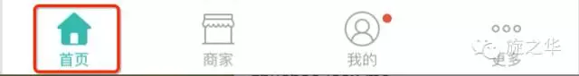

在目前市面上的APP中，大部分都是选项与选项之间的切换，比如：微信、微博、QQ空间……, 在iOS中，我们可以通过TabItem类进行实现。那么，在React Native中，我们应该怎么实现呢？

在React Native中可以通过TabBarIOS和TabBarIOS.Item组件来实现选项卡切换效果，大家可以看到后面带有IOS，所以这个组件是不支持Android的，当然后面我们可以自定义该组件。
TabBarIOS常见的属性
View的所有属性都可以被继承
barTintColor color 设置tab条的背景颜色
tintColor color 设置tab条上被选中图标的颜色
translucent bool 设置Tab栏是不是半透明的效果